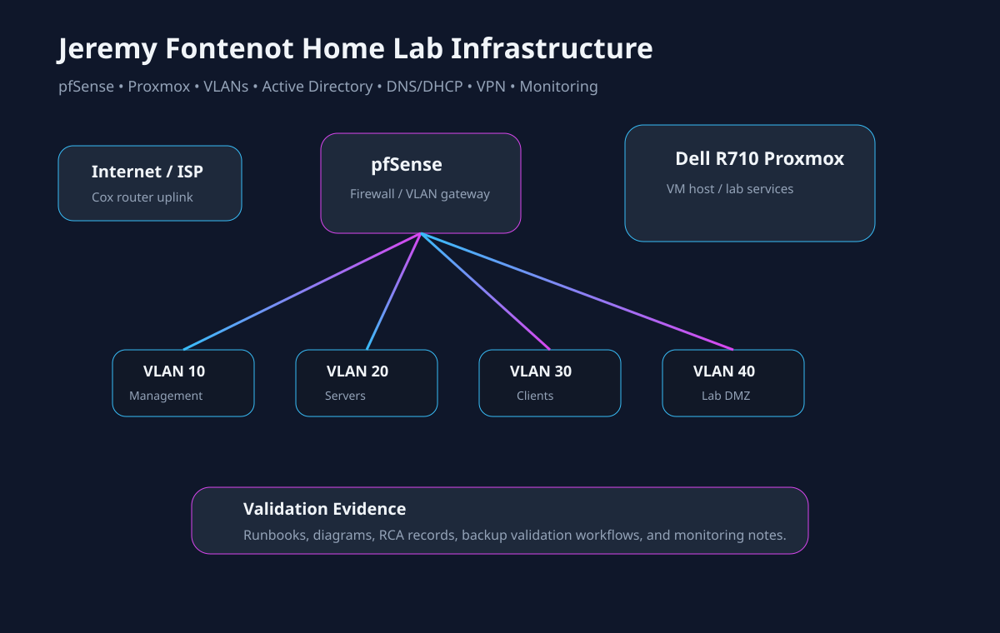
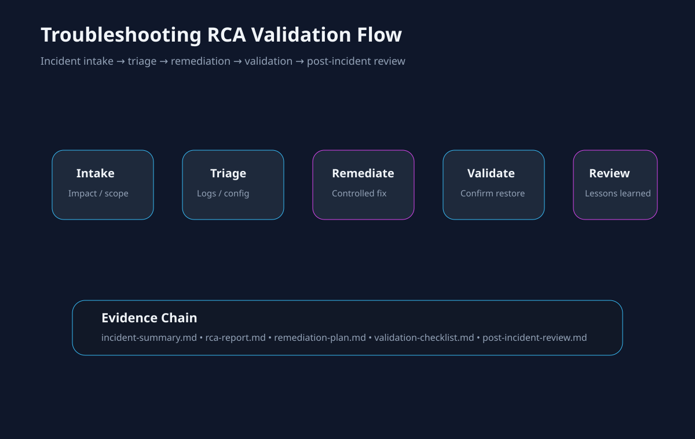

Evidence-First Validation
Proof mapped directly to technical skills.
A recruiter-friendly evidence portal for reviewing real repository artifacts, technical documentation, validation records, and certification assets. Each item explains what it is, what skill it supports, and why it matters.
Recruiter Quick View
What the evidence supports.
This page is designed so recruiters can scan the skill areas first, then technical reviewers can open the underlying proof files.
Service Desk Support
Microsoft 365
Identity Governance
Active Directory Concepts
PowerShell Automation
DNS / DHCP
VLAN Segmentation
Root Cause Analysis
Backup Validation
Monitoring
Documentation
Infrastructure Operations
Skill Validation System
Evidence grouped by recruiter review path.
Featured proof cards summarize the highest-value review paths. Detailed evidence cards below map each artifact to a specific skill and validation value.
Real Infrastructure Visuals
Evidence drawings based on the lab infrastructure.
These visuals document the portfolio infrastructure, support workflow, and validation model used throughout the proof portal.

Home Lab Infrastructure Map
Maps the pfSense, Proxmox, VLAN, DNS/DHCP, Active Directory, monitoring, and validation evidence path.
Open Drawing{kind=link}

Troubleshooting RCA Flow
Shows the support process from incident intake through validation and post-incident review.
Open Drawing{kind=link}
Recruiter Verification Flow
How to validate the portfolio.
- Review projectStart with the project summary and identify the technical domain.
- Open evidenceInspect the linked repository artifact, diagram, runbook, or validation note.
- Map skillConfirm which skill the evidence supports and where the proof is visible.
- Confirm validationLook for checklists, workflow notes, rollback context, or operational handoff details.
Microsoft 365 Lab Baseline
Identity, Conditional Access, endpoint, and administration documentation presented as a reviewer-ready Microsoft ecosystem proof path.
Conditional Access
Identity
Policy Planning
DocumentationConfigurationPolicy planningValidation context
Review Evidence
PowerShell Automation and Handoff
Change logs and operational handoff notes show automation supportability, validation awareness, and documentation discipline.
Automation
Change Control
Handoff
Change recordAutomation lifecycleOperational handoffReview discipline
Review Evidence
Troubleshooting RCA Workflow
Incident summary, RCA report, remediation plan, validation checklist, and post-incident review show structured support methodology.
RCA
Remediation
Validation
Incident summaryRoot cause analysisRemediation planValidation checklist
Review Evidence
Proof Portal
Microsoft 365
Networking
PowerShell
RCA
Validation Path
Documentation
Configuration
Runbooks
Checklists
Detailed proof-to-skill mapping
Identity
Identity Access Change Record
Evidence Strength84%
What is this? Change notes for identity and access planning.
Supported skill: Identity administration, access review, change planning, and rollback awareness.
Why it matters: Shows controlled documentation habits for identity-related changes.
Access ReviewRollback AwarenessChange Notes
View Evidence
Networking
VLAN / DNS / DHCP / pfSense
Evidence Strength88%
What is this? A combined networking evidence path covering VLAN architecture, DNS/DHCP operations, and pfSense segmentation notes.
Supported skill: Network fundamentals, segmentation, firewall concepts, network services, and operational troubleshooting.
Why it matters: Gives technical reviewers concrete proof of infrastructure reasoning and support documentation.
VLANsDNSDHCPpfSense
VLAN Walkthrough
DNS / DHCP Runbook
pfSense Notes
Recovery
Backup Restore Validation Workflow
Evidence Strength82%
What is this? Workflow for backup and restore validation planning.
Supported skill: Recovery planning, restore validation, risk reduction, and documentation discipline.
Why it matters: Shows awareness that backup value depends on verified recovery processes.
View Evidence
Monitoring
Monitoring and Alerting Overview
Evidence Strength78%
What is this? Overview of monitoring and alerting practices.
Supported skill: Operational monitoring, alert review, escalation awareness, and logging documentation.
Why it matters: Shows an operations mindset beyond one-time fixes.
View Evidence
Home Lab
Home Lab Portfolio
Evidence Strength86%
What is this? Preserved PDF portfolio of lab infrastructure work.
Supported skill: Infrastructure learning, systems administration practice, networking experience, and technical documentation.
Why it matters: Gives technical reviewers a broader view of hands-on lab development.
View EvidenceEvidence Philosophy
No placeholder proof. No unsupported claims.
Every major technical claim on this portfolio is tied to documentation, validation records, configuration artifacts, diagrams, certification assets, or preserved lab evidence. The goal is not inflated marketing language — it is reviewer-ready technical proof.
Reviewer Summary
Built to verify skills quickly.
This proof portal connects technical claims to readable evidence, infrastructure drawings, validation workflows, certification assets, and source-controlled documentation.
Certifications & Recognition
Credential assets available for review.
Certification and recognition badges are displayed from existing repository assets only.

CompTIA A+
Hardware, software, troubleshooting, operating systems, and service desk fundamentals.

CompTIA ITF+
Foundational IT concepts, terminology, systems, applications, and support awareness.

CompTIA Server+
Server hardware, storage, virtualization, disaster recovery, and infrastructure support concepts.

Microsoft Azure Fundamentals
Cloud concepts, Azure services, identity, governance, and cloud administration fundamentals.

Cisco
Networking fundamentals, connectivity concepts, routing, switching, and network troubleshooting.

Google IT Support
Help desk fundamentals, troubleshooting, operating systems, networking, and customer support.
Linux Professional Institute
Linux fundamentals, command-line awareness, and open-source system support concepts.

MTA Windows Server
Windows Server fundamentals, infrastructure concepts, and administrative foundations.

MTA Networking
Network infrastructure, protocols, connectivity, TCP/IP fundamentals, and troubleshooting concepts.

MTA Security Fundamentals
Security layers, authentication, authorization, defense-in-depth, and risk management fundamentals.
World Class IT Professional
Recognition for academic performance, professionalism, technical competency, and IT training achievement.